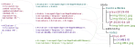

1. Introduction
Realizing the value proposition of the Semantic Web lies in building useful and robust applications that can interoperate over linked data. Protocols such as [LDP] and Solid organize linked data graphs into resource hierarchies, providing a foundation upon which these robust and interoperable applications can be created.Application interoperability depends on applications sharing semantics for relationships and data structures. Existing technologies fulfill portions of those dependencies:
-
RDF's foundation in unambiguous identifiers provides an infrastructure that allows for interoperability, but does not specifically encouraging or enforce it.
-
Shape languages (e.g. ShEx and [SHACL]) provide machine-readable, enforceable data structure definitions on single resources.
For applications that operate on more interconnected resources, Shape Trees express the layout of those resources and associate them with their respective shapes.
Shape trees marry RDF vocabularies, shapes, and resources into "little trees" that provide machine to machine interoperability, while at the same time creating concepts that humans can easily comprehend, such as medical records, notes, notebooks, calendars, and financial records.
This allows one to treat a set of related resources as a single grouping, and apply that to a range of operations including access control, data organization, data validation, and data migration.
Shape trees are defined as an RDF graph structure that expresses a set of expected behaviors by agents that work with them. These semantics can be implemented by a server or a client-side library that proxies requests to a server.
2. Shape Tree Structure
The following image introduces Shape trees by way of an example shape tree for interoperable notes called "CommonNote". It captures notes, any images included therein, as well as the note's citations.The example image includes three columns:
-
Shape definitions (expressed in ShEx) for the resources described by the CommonNote shape tree
-
A shape tree (expressed in Turtle) for CommonNote
-
Example data instances adhering to the CommonNote ShapeTree (a "resource hierarchy")
| Shapes (ShEx) | Shape Tree (Turtle) | Resource Hierarchy |
|---|

Here, /data/medicalNotes and /data/astronomy/notes are both shape tree instances of the <#container> shape tree.
They are both Containers per <#container> tree:expectsType tree:ShapeTreeContainer and could contain any number of note shape tree instances per tree:contains <#note>.
In this example, xrays-2019-08, GP-2020-04-18 and blue-shift respectively are shape tree instances of the <#note> shape tree.
Each contains a binary image and blue-shift has a citation.
A shape tree document can contain multiple shape tree definitions. A given definition in a shape tree resource can be referenced and used on its own as a standalone shape tree, or as part of an interconnected hierarchy of shape trees.
The shape tree describing the citation has the subject node <#citation>.
This shape tree asserts that associated resources (e.g. cit-M33.ttl) must:
-
Be a Resource per
<#citation> tree:expectsType tree:ShapeTreeResource -
Have a name matching a URI template (i.e. must start with "cit-") per
<#citation> tree:matchesUriTemplate "cit-{name}" -
Conform to the shape
<CommonNote#Citation>per<#citation> tree:validatedBy <CommonNote#Citation>
2.1. Shape Tree Predicates
A shape tree consists of:-
An id: an addressable label for this shape tree
As with all RDF structures, providing an id makes it possible to address this entity from outside the document. -
An expectsType: type of the associated resource:
tree:ShapeTreeContainer,tree:ShapeTreeResourceORtree:ShapeTreeNonRDFResource.
The expectsType specifies whether the associated resources should be a container, a normal resource, or an non-RDF source. Shape tree implementations will map these resource types to the appropriate constructs for the intended platform (i.e. in an LDP environment tree:ShapeTreeResource would map to ldp:Resource). -
either of:
-
A label: label for a resource which will always be created;
This is used when resources with specific names will appear in the resource hierarchy. -
A matchesUriTemplate: pattern for a resource to be matched against a POSTed Slug: header or a resource name in a PUT/PATCH.
This is used to constrain resource creation based resource name patterns.
-
-
A validatedBy: The RDF graph structure of any POSTed or PUT resource must conform to this shape;
This allows shape trees to ensure that the data in the resource hierarchy conforms to the expected schemas. -
An optional supports: an IRI to another shape tree.
This captures a relationship where a shape tree is dependent on another for purposes of ancillary tasks like indexing. It is expected to describe resources which extend or another shape tree. -
An optional contains: a list of nested shape trees.
This captures the containership of a conforming resource hierarchy. In addition to containing other shape trees, this list may includetree:AllowNone,tree:AllowAll,tree:AllowContainers,tree:AllowResources,tree:AllowNonRDFSourceswhich described the intended behavior when a resource is created that does not adhere to any matching matchesUriTemplate predicates. -
An optional references: a list of referenced shape trees.
These provide advice that the data in resources described by this shape tree references another shape tree. This enables connectivity of shape trees without requiring direct nesting/containment of those relationships.
Annotating all shape trees within a given resource is an optional hasShapeTreeDecoratorIndex: An IRI containing an index of SKOS graphs.
As detailed in Describing Shape Trees below, SKOS provides an extensible means to describe a shape tree in human-readable terms. The tree:hasShapeTreeDecoratorIndex allows shape tree maintainers to provide a reference to SKOS graphs that accurately and reliably describe the shape tree as intended, which is important for authorization use cases.
3. Planting a Shape Tree
The above example describes an instance at/data/CommonNotes.
This is an LDP Container which is constrained to contain only instances of <CommonNoteShapeTree#note>.
This container is described by the shape tree <CommonNoteShapeTree#container>:
<#container>
tree:expectsType tree:ShapeTreeContainer ;
tree:contains <#note> .
In order to create this, an application like NeverNote would use a plant operation to create an instance of the <#container> shape tree.
This plant operation is a POST to the parent Container with one or more rel="ShapeTree" Link header .
The resulting LDP Container for CommonNotes is expected to be shared with other applications.
Below, we use the name "OtherNote" as an example of another application which can consume and process data conforming to the shapes referenced by the CommonNote shape tree.
POST /data/ Slug: CommonNotes Link: <http://www.w3.org/ns/ldp#Container>; rel="type" Link: <http://commonnote.example/CommonNoteShapeTree#container>; rel="ShapeTree"
The response identifies a LDP Container for CommonNotes notes:
HTTP 201 CREATED Location: http://pod.example/data/CommonNotes/ Content-type: text/turtle; charset=utf-8 Content-length: 396
Planting a shape tree results in a new LDP Container in the resource hierarchy. Metadata associated with this container describes the planted shape tree that manages the contents of the container.
@prefix ldp: <http://www.w3.org/ns/ldp#> . @prefix xsd: <http://www.w3.org/2001/XMLSchema#> . @prefix tree: <http://www.w3.org/ns/shapetree#> . @prefix dc: <http://purl.org/dc/terms/> . @prefix dcterms: <http://purl.org/dc/terms/> . <> tree: hasShapeTreeLocator <#bc1b490a-537d-4749-b778-cd7d6da3ac56> . <#bc1b490a-537d-4749-b778-cd7d6da3ac56> tree: hasRootShapeTree <http://commonnote.example/CommonNoteShapeTree#container> ; tree: hasShapeTree <http://commonnote.example/CommonNoteShapeTree#container> ; tree: hasShapeTreeInstancePath "." ; tree: hasShapeTreeInstanceRoot </data/CommonNotes/> .
4. Creating Data Instances
Despite NeverNote having planted the LDP Container /data/CommonNotes, it could be another application, OtherNote, which first creates data there.
When POSTing to any managed container, there is expected to be a contains shape tree matching the new resource. If the shape tree includes a validatedBy, the POST must include a Link: rel="focusNode" header to identify the node in the POSTed data that should conform to that shape.
POST /data/CommonNotes/ Link: <#note1> ; rel="focusNode" PREFIX : <http://nevernote.example/ns#> PREFIX ldp: <http://www.w3.org/ns/ldp#> PREFIX xsd: <http://www.w3.org/2001/XMLSchema#> <#note1> : title "Note1" ; : content "Don’t believe the hype!" ; : updated "2020-01-01T12:34:00Z" ^^ xsd:dateTime; : tagNames ( "tag1" "tag2" ) .
When an application POSTs to a Managed Container, the shape tree-aware agent handling the POST locates the appropriate shape tree that is contained,
via the tree:contains predicate, that matches its URI template.
Add explanation of explicit header to guide "contains"
-
If the shape tree includes a
tree:validatedBypredicate, the POST body is parsed and the focus node is tested for conformance. -
If the posted resource is invalid, it will return with a 422 Unprocessable Entity message.
-
If no matching shape tree is found, the agent will use any present
tree:Allow*IRIs to determine whether to allow the new resource. -
If the posted resource is valid, the typical LDP processing will create an entity whose contents include the POSTed body.
#matching-contained-shapetree
5. Describing Shape Trees
To aid in the human-readability of shape trees, one or more SKOS graphs can be used to provide a textual representation of the structure.
Making use of the tree:hasShapeTree predicate, labels can be applied to specific Shape Trees using any language.
A SKOS index document allows for discovery of multiple definitions of a Shape Tree supporting multiple language preferences and cognitive abilities.
The convention on how this index of SKOS graphs is structured and used, along with the rules to govern the selection of the appropriate graph for a user is the responsibility of the ecosystem using Shape Trees.
<#index> a tree: ShapeTreeDecoratorIndex ; treeIndex: hasSeries <#en> , <#ru> . <#en> a tree: ShapeTreeDecoratorSeries ; tree: hasHierarchy <#en-v1> , <#en-v1.1> . <#en-v1> a tree: ShapeTreeDecoratorHierarchy ; xsd: lang "en" ; tree: hasVersion "1.0" ; tree: hasSkosGraph <https://commonnote.example/CommonNoteGraph-en-v1#root> ; tree: hasSHA256Hash : "92ac6762c129666107299c2386420fdb31b12df7723b3aa0d132485fda864a47" . <#en-v1.1> a tree: ShapeTreeDecoratorHierarchy ; xsd: lang "en" ; tree: hasVersion "1.1" ; tree: hasSkosGraph <https://commonnote.example/CommonNoteGraph-en-v1.1#root> ; tree: hasSHA256Hash : "74a468adf584231d0aa3b3277fd21b13bdf0246832c992701666921c2676ca29" . <#ru> a tree: ShapeTreeDecoratorSeries ; treeIndex: hasHierarchy <#ru-v1> . <#ru-v1> a tree: ShapeTreeDecoratorHierarchy ; xsd: lang "ru" ; tree: hasVersion "1.0" ; tree: hasSkosGraph <https://commonnote.example/CommonNoteGraph-ru-v1#root> ; tree: hasSHA256Hash : "7d8cf659fdbd69618658e043c2c6e8c8e9395f4b652a38c2e5922eb7a51de42c" .
(<#en-v1>), in English, defining the terms in the CommonNotes shape tree@prefix f: </data/CommonNotesShapeTree#container> . @prefix tree: <http://www.w3.org/ns/shapetree#> . @prefix skos: <http://www.w3.org/2004/02/skos/core#> . @prefix skosxl: <http://www.w3.org/2008/05/skos-xl#> . <#root> a tree: ShapeTreeLabel ; tree: hasShapeTree f: root ; skosxl: prefLabel [ skosxl: literalForm "Note Container" @ en] ; skos: narrower <#note> . <#note> a tree: ShapeTreeLabel ; tree: hasShapeTree f: note ; skosxl: prefLabel [ skosxl: literalForm "Text content of a note" @ en] ; skos: narrower <#citation> , <#image> . <#citation> a tree: ShapeTreeLabel ; tree: hasShapeTree f: citation ; skosxl: prefLabel [ skosxl: literalForm "Citation to another document within a note" @ en] . <#image> a tree: ShapeTreeLabel ; tree: hasShapeTree f: citation ; skosxl: prefLabel [ skosxl: literalForm "Embedded image or graphic within a note" @ en] .
(<#ru-v1>), in Russian, describing the same CommonNotes shape tree:@prefix f: </data/CommonNotesShapeTree#container> . @prefix tree: <http://www.w3.org/ns/shapetree#> . @prefix skos: <http://www.w3.org/2004/02/skos/core#> . @prefix skosxl: <http://www.w3.org/2008/05/skos-xl#> . <#root> a tree: ShapeTreeLabel ; tree: hasShapeTree f: root ; skosxl: prefLabel [ skosxl: literalForm "контейнер для заметок" @ ru] ; skos: narrower <#note> . <#note> a tree: ShapeTreeLabel ; tree: hasShapeTree f: note ; skosxl: prefLabel [ skosxl: literalForm "текстовое содержание заметки" @ ru] ; skos: narrower <#citation> , <#image> . <#citation> a tree: ShapeTreeLabel ; tree: hasShapeTree f: citation ; skosxl: prefLabel [ skosxl: literalForm "Цитирование другого документа в заметке" @ ru] . <#image> a tree: ShapeTreeLabel ; tree: hasShapeTree f: citation ; skosxl: prefLabel [ skosxl: literalForm "Встроенное изображение или изображение в заметке" @ ru] .
6. Definitions
All definitions as stated below should be considered in the context of shape trees, whether explicitly stated or not.The Plant Operation represents the act of marking a new or existing container as being managed by one or more shape tree.